SMART CAMPUS IoT.
NODO · INSTITUTO LEONARDO MURIALDO · 6.º INFORMÁTICA A · 2026
Un nodo. Múltiples variables.
Temperatura, humedad, iluminación, ruido, gases y presencia, con cálculo local del índice de confort.
Equipo G4
Instituto Leonardo Murialdo · 6.º año Informática A · 2026.
El proyecto
Una primera aproximación al sistema desarrollado por el Equipo G4.
El sistema contempla variables de temperatura, humedad, iluminación, ruido, gases y presencia. A partir de las variables ambientales, el firmware también publica un indicador general de confort.
Sensores ambientales
Los módulos instalados registran distintas condiciones del espacio.
ESP32-C3
El microcontrolador obtiene las lecturas y prepara los datos.
Wi-Fi + MQTT
Las mediciones se envían al broker MQTT del servidor escolar.
Dashboard web
La interfaz permite consultar las mediciones y su evolución.
Control de cambios
Registro de versiones, fechas, modificaciones y responsables.
Objetivo y visión general
Propósito del sistema y descripción general de su funcionamiento.
El sistema publica siete variables: temperatura, humedad, iluminación, ruido, gases, presencia y confort. La información se actualiza en el dashboard y puede observarse mediante tarjetas, gráficos y exportación de registros CSV.
Problema a resolver
Contexto que dio origen al desarrollo del nodo.
El alcance del sistema es de monitoreo: las mediciones permiten observar tendencias y estados, pero no constituyen por sí mismas una certificación de calidad ambiental ni reemplazan instrumentos profesionales.
Alcances
Funciones contempladas y límites conocidos del desarrollo.
El indicador de confort se calcula a partir de variables ambientales. La lectura del MQ-135 se presenta como un valor estimado por el programa y no como una medición certificada de concentración de contaminantes. La calibración del micrófono y algunas verificaciones de hardware quedan sujetas a las pruebas finales.
Equipo e integrantes
Organización del trabajo y responsabilidades del Equipo G4.
Román Manzo
Project Manager. Coordinación general y colaboración en hardware, programación y documentación.
Fidel Gavazza
Hardware y electrónica. Circuito, conexiones, soldadura, planos y caja.
Benjamín Álvarez
Documentación. Organización documental, Carta Gantt y apoyo en el diseño físico.
Tiziano Tagliaferro
Programación y redes. Firmware del ESP32-C3, MQTT y colaboración técnica.
Joaquín Surra
Dashboard. Diseño visual e interfaz web y funciones de comunicación MQTT.
Asignaturas involucradas
Aportes de los espacios curriculares al desarrollo del proyecto.
Programación: desarrollo y corrección del firmware del ESP32-C3.
Aplicaciones: diseño y desarrollo del dashboard.
Sistemas Operativos: comunicación entre el nodo y el broker mediante MQTT.
Seguridad Informática: organización, planificación, seguimiento de tareas y documentación.
Investigación Operativa: preparación y práctica de la presentación.
Planificación y Scrum
Organización del equipo, distribución de tareas y seguimiento.
En el Equipo G4 se definieron responsabilidades y se utilizó una carta Gantt compartida para registrar tareas, fechas y avances. La organización cotidiana fue flexible y, en varias ocasiones, las actividades se resolvieron sobre la marcha. Por eso, el seguimiento no funcionó como una aplicación estricta de Scrum con reuniones y ciclos diarios formalizados.
Carta Gantt
Cronograma de actividades, responsables y avances.
Definición de los grupos de trabajo.
Aprendizaje y pruebas de componentes.
Organización del equipo y primeras pruebas conjuntas.
Construcción del nodo y programación de la interfaz.
Correcciones, montaje y pruebas finales.
Entregables e hitos
Principales resultados parciales y entregas del desarrollo.
Las fechas y el estado final de cada hito se consolidarán a partir de la carta Gantt y de la bitácora.
Arquitectura del sistema
Relación entre sensores, microcontrolador, red, broker y dashboard.
El nodo publica siete tópicos independientes bajo la estructura 6to_info/A/G4/: temperatura, humedad, luz, ruido, gases, presencia y confort.
Plano de diseño
Distribución física de componentes y conexiones del nodo.
El plano se presentará como referencia del montaje construido. Las conexiones y los detalles de alimentación deberán cotejarse con el circuito físico antes de publicar la versión definitiva.
El nodo, en construcción y terminado
Fotografías originales del montaje: caja, distribución interna, placa perforada, cableado, sensores y vista exterior. Las imágenes documentan el estado real del prototipo.

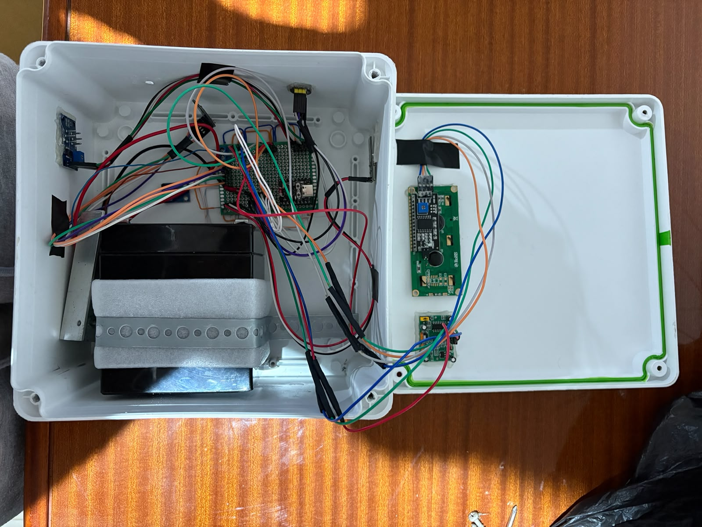

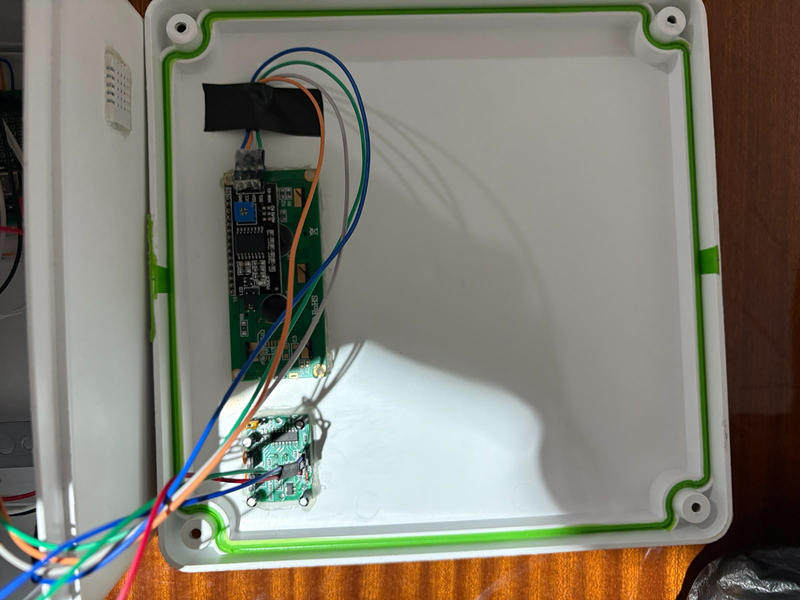
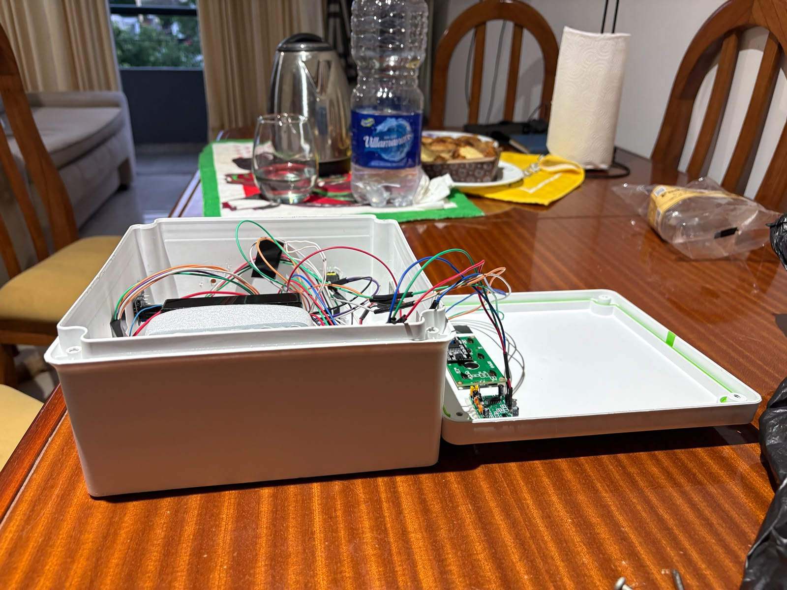
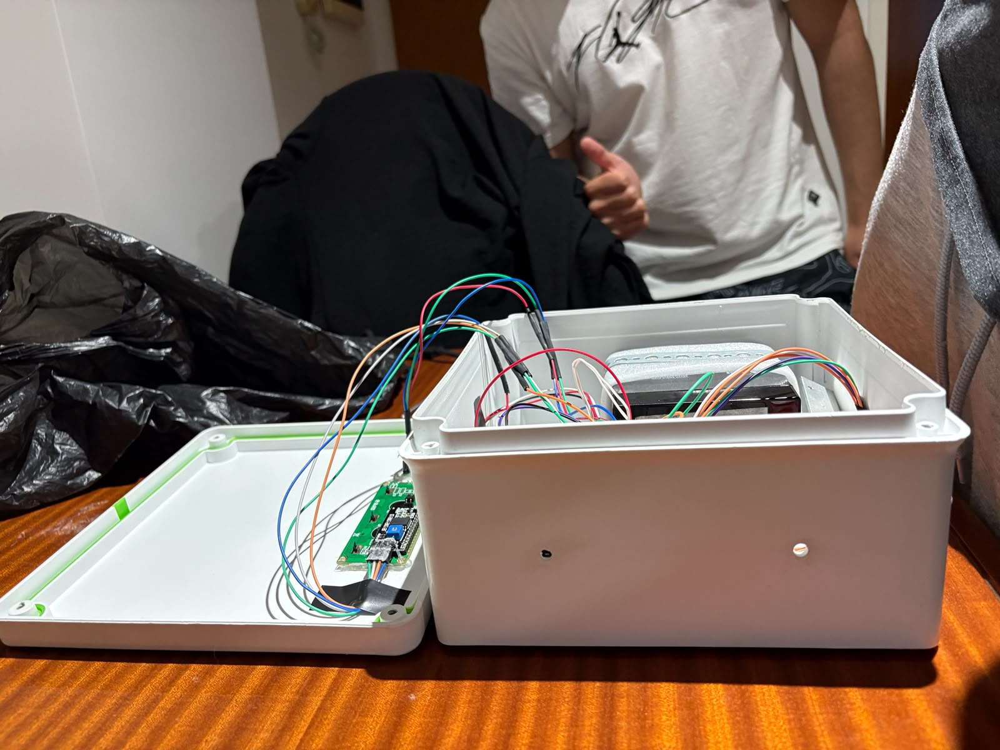
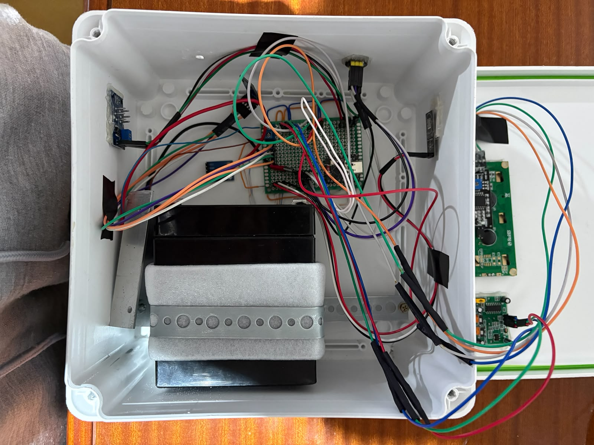
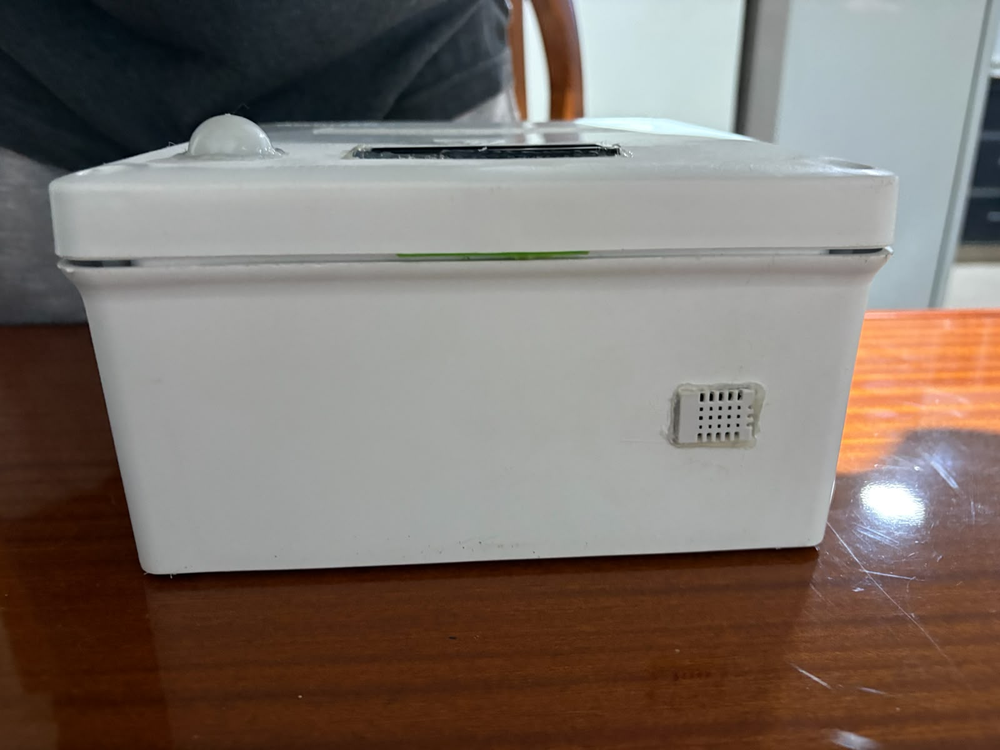
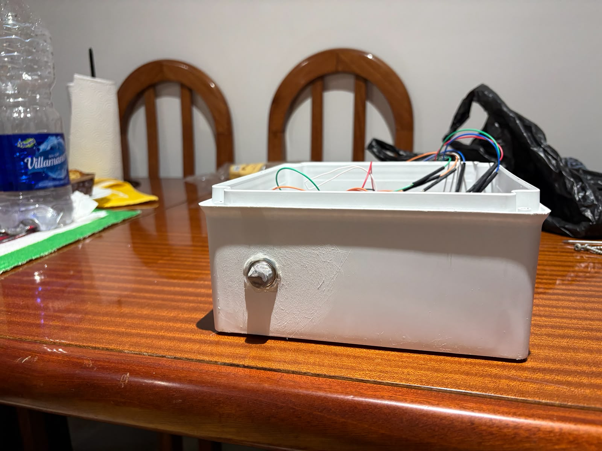
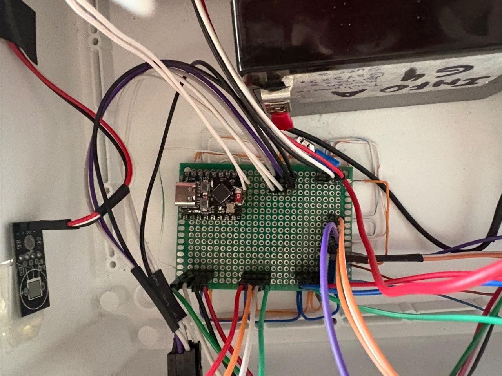

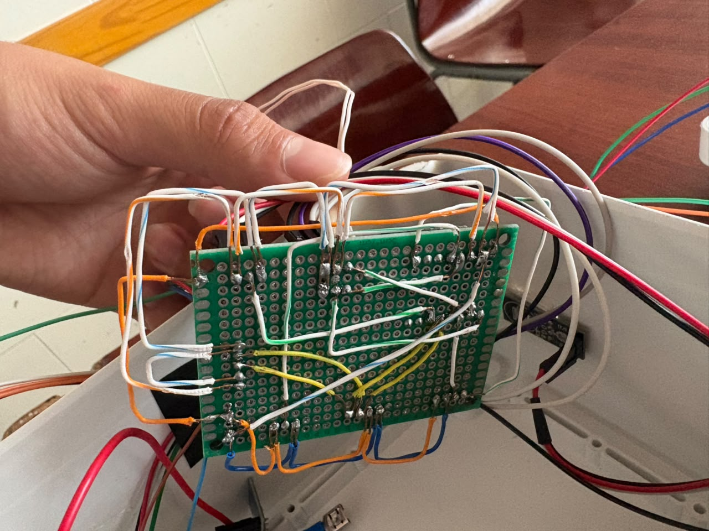
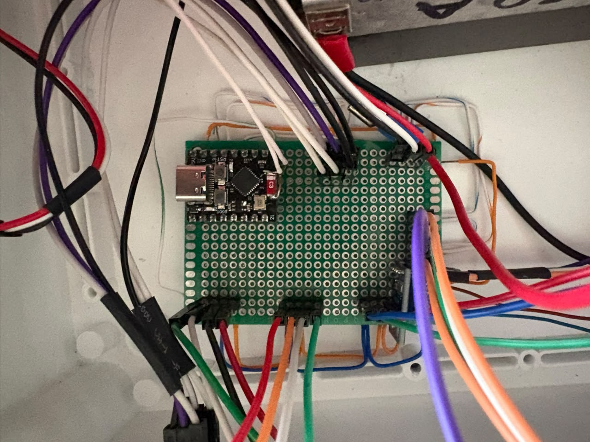
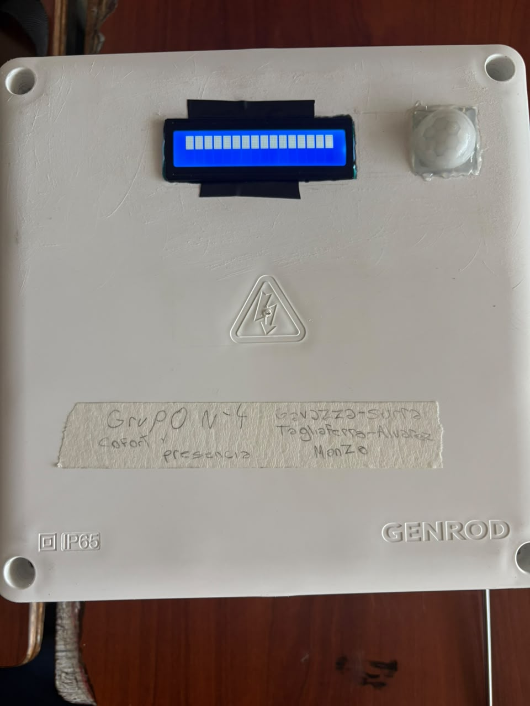
Componentes
Elementos electrónicos que forman parte del Equipo G4.
Las características, conexiones, alimentación y función de cada componente se desarrollarán en fichas técnicas individuales. Los valores estimados por el MQ-135 y la calibración del INMP441 se describirán con sus limitaciones.
Alimentación: batería Vision de 12 V y 5 Ah, recibida sin costo, junto con un regulador LM7805 proporcionado al equipo.
DHT22
Temperatura y humedad relativa del ambiente.
BH1750
Medición de iluminación en lux mediante I²C.
MQ-135
Respuesta del sensor a gases; el valor ppm mostrado es estimado por el programa.
INMP441
Micrófono digital I²S. La calibración acústica final debe verificarse.
HC-SR501
Detección de movimiento y presencia.
LCD 16×2 I²C
Pantalla local. El contenido definitivo mostrado queda pendiente de revisar.
Asignación de conexiones documentada
La asignación se transcribe de los apuntes y planos de conexión del equipo:
- MQ-135: AO → GPIO 0; DO → GPIO 7; alimentación de 5 V y GND desde la línea regulada.
- PIR HC-SR501: señal → GPIO 3; alimentación de 5 V y GND.
- LCD I²C: SDA → GPIO 8; SCL → GPIO 9; alimentación de 5 V y GND.
- DHT22: señal → GPIO 10; alimentación de 3,3 V y GND.
- BH1750: SDA → GPIO 8; SCL → GPIO 9; alimentación de 3,3 V y GND; ADDR a GND.
- INMP441: SCK → GPIO 4; WS → GPIO 5; SD → GPIO 6; L/R a GND; alimentación de 3,3 V y GND.
Los apuntes indican estas conexiones. La distribución final debe contrastarse con la placa física antes de intervenir el circuito.
Diseño de la aplicación
Interfaz web para consultar, analizar y exportar los datos del nodo.
Perfiles de acceso
- Invitado: puede consultar las funciones de visualización y utilizar la exportación CSV con datos de simulación.
- Administrador: dispone de la función adicional de alternar entre el modo de simulación y el modo real mediante MQTT. Puede exportar los datos correspondientes al modo seleccionado.
Visualización y análisis
Las tarjetas principales muestran temperatura, humedad, iluminación, ruido, gases, presencia e índice de confort. Los gráficos permiten observar la evolución de las variables a lo largo del tiempo.
El índice de confort se calcula en el ESP32-C3 mediante un contador de puntos y se representa con colores: verde para un estado favorable, amarillo para uno intermedio y rojo para uno desfavorable. La fórmula y los umbrales exactos no están documentados en esta versión.
Exportación CSV
El archivo exportado puede incluir fecha y hora, temperatura, humedad, luz, ruido, gas, presencia y confort.
Integrantes y modelo 3D
El apartado de integrantes presenta fotografías, nombres, roles, tareas realizadas y correos electrónicos. El dashboard incorpora un modelo tridimensional del nodo.
Conectividad y publicación
En modo real, el dashboard recibe datos mediante MQTT. Si se pierde la conexión, intenta reconectarse. La aplicación está alojada en GitHub Pages.
Abrir dashboard ↗Presupuesto y BOM
Materiales adquiridos, repuestos y costo total del desarrollo.
| Material | Cantidad | Importe total |
|---|---|---|
| Estaño 40 g | 1 | $9.450,00 |
| INMP441 | 1 | $9.999,00 |
| Placa experimental | 1 | $4.600,00 |
| BH1750 (incluye reemplazos) | 3 | $14.340,00 |
| LED | 1 | $1.613,00 |
| MQ-135 | 1 | $4.632,00 |
| Pack de 5 borneras | 1 | $6.237,70 |
| HC-SR501 | 1 | $5.719,00 |
| Step-down | 1 | $3.399,00 |
| DHT22 | 1 | $11.052,00 |
| ESP32-C3 Mini | 1 | $7.999,00 |
| LCD 16×2 | 1 | $4.100,00 |
| Módulo display | 1 | $3.010,00 |
| Envío | — | $6.490,00 |
| Cable USB | 1 | $6.000,00 |
| Pines hembra | 2 | $4.000,00 |
| Pines macho | 1 | $2.000,00 |
| Termocontraíble | 1 | $2.500,00 |
| Cables Arduino ×15 | 1 | $3.500,00 |
$110.640,70
Gasto total registrado, incluidos repuestos y envío.
$22.128,14
División matemática del total entre cinco integrantes; no implica que cada uno haya aportado exactamente ese importe.
Materiales recibidos
La batería Vision de 12 V y 5 Ah, el regulador LM7805 y la caja plástica de 21 × 21 cm fueron entregados al equipo sin costo y, por eso, no se incluyen en el desembolso total.
Bitácora de pruebas
Ensayos individuales, integración, fallas detectadas y soluciones.
Primero se probaron los sensores por separado y luego se integraron al circuito. Se verificó el funcionamiento del LCD, el procesamiento del ESP32-C3, la publicación MQTT, la recepción en el dashboard y la actualización de datos cada 10 segundos.
| Elemento / prueba | Resultado informado |
|---|---|
| DHT22, BH1750, MQ-135, INMP441 y HC-SR501 | Pruebas individuales realizadas; funcionamiento confirmado. |
| LCD 16×2 | Visualiza mediciones e índice de confort. |
| ESP32-C3 y MQTT | Publicación de variables confirmada. |
| Dashboard | Recepción y visualización confirmadas. |
| Actualización | Intervalo de 10 segundos comprobado. |
| Integración final | El nodo completo funcionó con todos los sensores conectados. |
Problemas y soluciones
- Antena Wi-Fi: la antena inicial tenía poca recepción. Se reemplazó por otra de mayor rendimiento y luego por una de mayor tamaño al detectar interferencias con la protoboard.
- BH1750: fue necesario reemplazar el sensor; el presupuesto registra tres unidades compradas en total.
- Alimentación: el módulo Step-down se dañó y entregó 5 V por el canal destinado a 3,3 V. Se reemplazó por otro regulador proporcionado al equipo.
- INMP441: necesitó calibración para ajustar su funcionamiento.
- Programación: el desarrollo se realizó mediante prueba y error con asistencia de IA; algunas modificaciones generaron errores que debieron revisarse y corregirse.
Pruebas pendientes de cuantificación
No se registró la duración exacta de una prueba continua ni se midió formalmente la autonomía de la batería Vision de 12 V y 5 Ah. Por lo tanto, no se informa un tiempo de funcionamiento estimado como si hubiera sido comprobado.
Resultados y mejoras
Evaluación del resultado alcanzado, aprendizajes y posibles ampliaciones.
El Equipo G4 considera que cumplió el objetivo inicial: desarrollar un dispositivo capaz de medir variables ambientales en el ámbito escolar, procesarlas y transmitirlas mediante MQTT para su visualización en un dashboard.
Se logró integrar los sensores, el ESP32-C3, la pantalla LCD, la conexión Wi-Fi, la comunicación MQTT y la aplicación web. El equipo destaca especialmente la prolijidad del armado y de la presentación general del proyecto.
Dificultades
La mayor dificultad estuvo en la programación, que requirió pruebas, correcciones y modificaciones. También se resolvieron inconvenientes de recepción Wi-Fi, reemplazos de sensores y fallas en la alimentación.
Limitación actual
La principal limitación identificada es la duración de la batería. No se realizó una medición formal de autonomía.
Mejoras propuestas
- Incorporar un testigo luminoso para indicar visualmente el estado del dispositivo.
- Mejorar la autonomía de alimentación.
- Agregar un cooler interno.
- Incorporar actuadores para ampliar el sistema más allá de la medición y transmisión de datos.
Aprendizajes y conclusión
El proyecto permitió aprender a trabajar mejor en equipo, organizarse para una tarea de largo plazo y recuperarse después de momentos de frustración. El equipo lo considera un muy buen proyecto, de dificultad media, con aplicaciones interesantes para desarrollos futuros.
Guía de uso del nodo
Encendido, consulta de información y cuidados básicos.
Encendido y funcionamiento
El nodo se alimenta mediante una batería Vision de 12 V y 5 Ah. Al encenderse, el ESP32-C3 inicia el sistema, se conecta a la red Wi-Fi configurada e intenta publicar las mediciones mediante MQTT. Para apagarlo, se desconecta la alimentación.
Consulta del dashboard
El dashboard está publicado en GitHub Pages. El perfil invitado permite consultar la demostración con datos simulados. El administrador puede alternar entre simulación y recepción de datos reales por MQTT. Las mediciones se presentan en tarjetas y gráficos; la actualización del modo real se realiza cada 10 segundos.
Interpretación de indicadores
El índice de confort se representa mediante colores: verde (favorable), amarillo (intermedio) y rojo (desfavorable). El panel también informa el estado de la conexión de red y MQTT.
Exportación
La exportación CSV incluye fecha y hora, temperatura, humedad, luz, ruido, gas, presencia y confort. El invitado exporta datos de simulación; el administrador exporta los datos del modo seleccionado.
Cuidados
Antes de abrir la caja, desconectar la batería. Retirar los tornillos de la tapa frontal para acceder al interior. Evitar golpes, agua, tirones de cables y manipulación del circuito energizado. Mantener despejadas las aberturas de los sensores.
Cómo usar esta documentación
Guía para recorrer los capítulos e interpretar los recursos técnicos.
La documentación está organizada para acompañar el desarrollo del proyecto desde su idea inicial hasta la evaluación final. El menú lateral permite abrir cada apartado de forma independiente. Los controles de navegación al pie de las páginas permiten avanzar o retroceder entre subsecciones.
Recorrido recomendado
- Presentación: conocer el propósito, el problema, los alcances y el equipo.
- Planificación: consultar la organización del trabajo, la Carta Gantt y los hitos.
- Diseño técnico: comprender la arquitectura, el plano, los componentes y el dashboard.
- Seguimiento: revisar costos, pruebas, resultados y mejoras.
- Guía de uso: consultar el funcionamiento y los cuidados del nodo.
Cómo interpretar los recursos
- Diagramas: muestran relaciones entre componentes y recorridos de información; las flechas indican dirección del flujo.
- Planos y esquemas: ayudan a reconocer la distribución física y las conexiones eléctricas.
- Fotografías: documentan el dispositivo y las etapas reales de construcción.
- Tablas: organizan cantidades, costos, características y resultados.
- Carta Gantt: representa las tareas y etapas en el tiempo.
- Modelo 3D: facilita la exploración visual de la estructura del nodo.
Recursos complementarios
El dashboard permite consultar las mediciones; el modelo tridimensional representa el dispositivo; la galería reúne imágenes del desarrollo y el glosario explica términos técnicos utilizados en el documento.
Se recomienda comenzar por Presentación y continuar en orden. Si se busca un dato puntual, se puede utilizar el menú lateral o la búsqueda de la documentación. Los datos no comprobados se identifican como pendientes y no deben interpretarse como resultados confirmados.
Glosario técnico
Conceptos y siglas que aparecen a lo largo de la documentación.
Microcontrolador utilizado como unidad central del nodo.
Terminal de entrada/salida de propósito general del microcontrolador.
Protocolo ligero de mensajería basado en publicación y suscripción.
Servidor que recibe mensajes publicados y los distribuye a sus suscriptores.
Bus de comunicación serial que utiliza líneas SDA y SCL.
Interfaz serial utilizada para transmitir datos digitales de audio.
Conversor analógico-digital que transforma una señal analógica en un valor digital.
Valor eficaz de una señal; puede utilizarse para caracterizar la amplitud de audio.
Formato de archivo tabular que separa los valores mediante delimitadores.
Programa que se ejecuta directamente en el microcontrolador.
Interfaz visual que reúne indicadores, gráficos y datos del sistema.
Bill of Materials: lista estructurada de materiales y componentes.
Exploración 3D del Equipo G4
Explorá el diseño físico del nodo, identificá sus sensores y consultá valores simulados o datos reales cuando estén disponibles.
Exploración sin el nodo conectado
El visor genera valores de ejemplo para que se puedan probar las etiquetas y la selección de sensores.
Datos reales del nodo
El visor dispone de una API para recibir las mediciones reales. La conexión automática con el dashboard o MQTT requiere configurar el puente de datos.